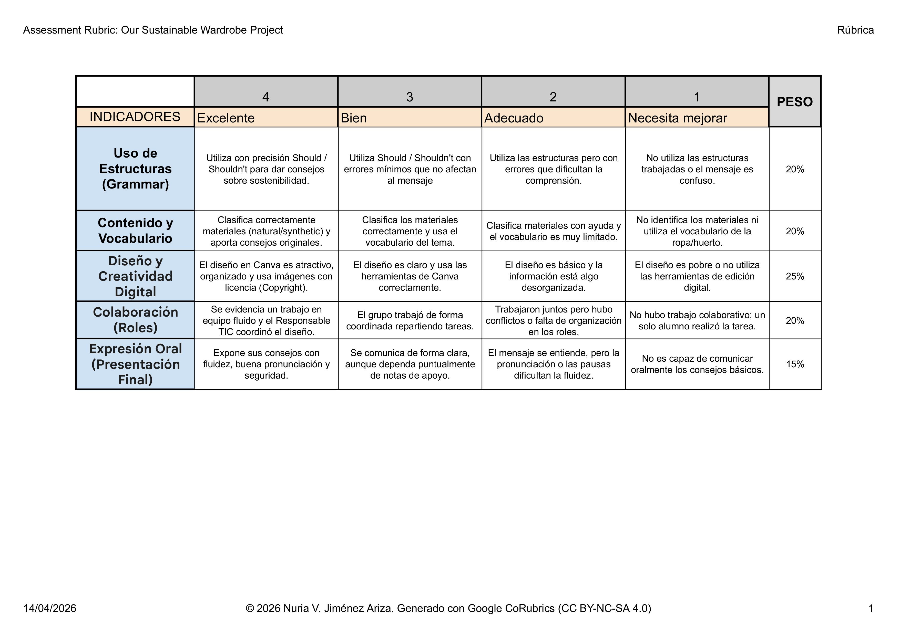
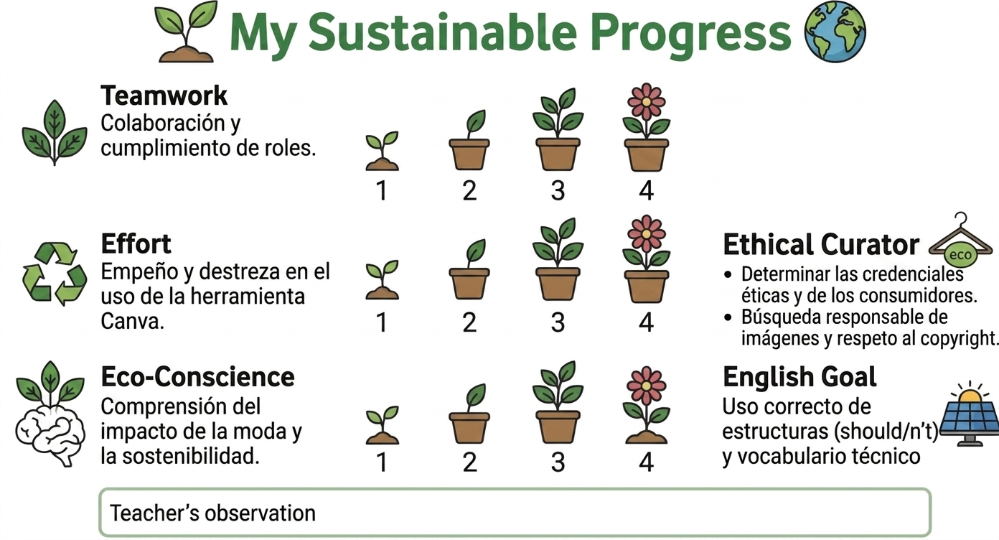
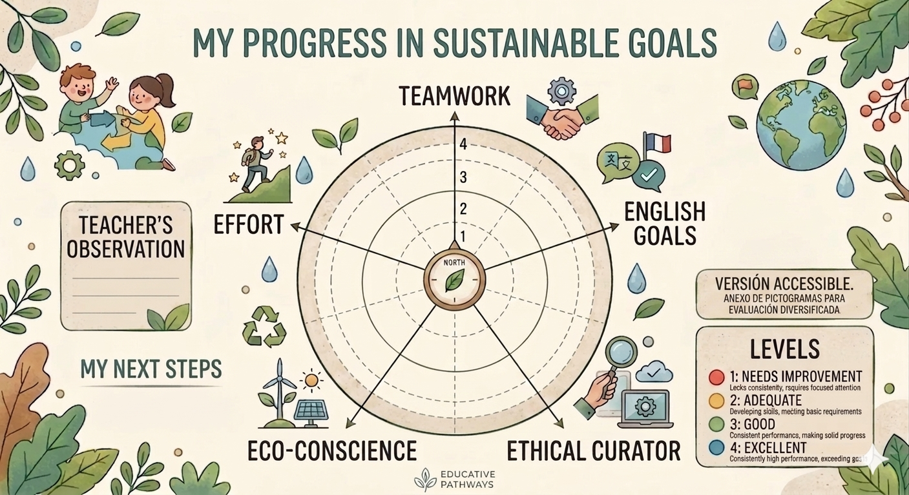
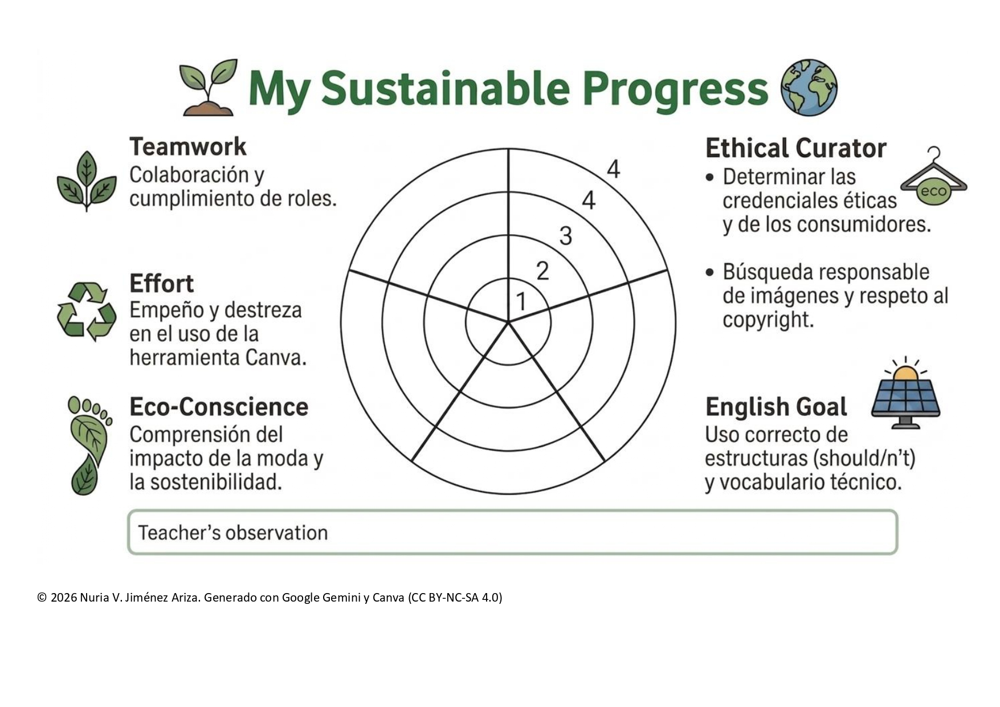
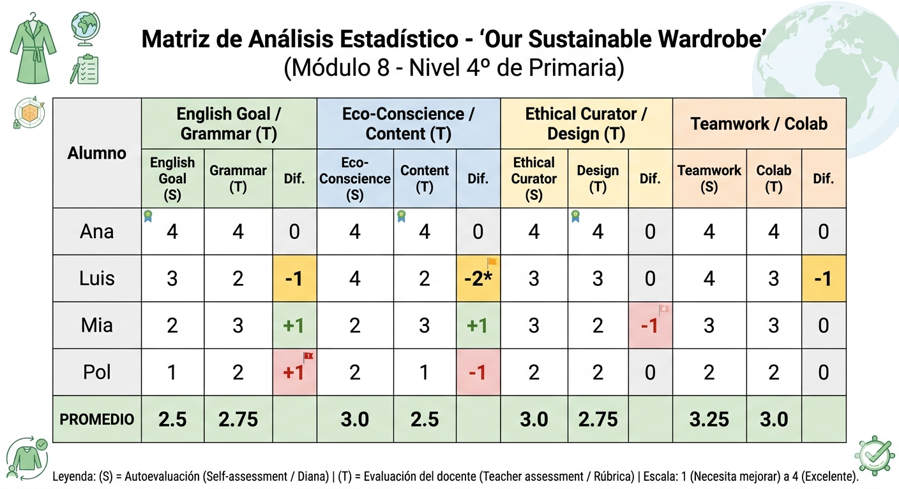

2.1.Guía Didáctica del Proyecto 🎓
Introducción.
Este recurso ha sido diseñado como una transposición didáctica al inglés del RED
( Recurso Educativo Digital).
"El secreto detrás de la moda" (Procomún), adaptando los contenidos para un nivel A1/A2 de Primaria.
🎯 Objetivos de Aprendizaje.
-
-
Identificar y clasificar fibras textiles en inglés (Natural vs. Synthetic).
-
Comprender el impacto ambiental del consumo de ropa (Sustainability).
-
Desarrollar la competencia digital mediante la creación de un póster en Canva.
-
⏳ Temporalización y Metodología
-
-
Sesiones: 6 sesiones de 45 minutos.
-
Metodología: Aprendizaje Basado en Proyectos (ABP) y enfoque CLIL (Inglés como lengua vehicular).
-
Atención a la diversidad: Uso de pictogramas, andamiaje lingüístico y dianas de autoevaluación adaptadas (DUA).
-
📚 Referencia y Adaptación Pedagógica (REA)
Este proyecto es el resultado de la curación y adaptación de un Recurso Educativo Abierto (REA) del repositorio Procomún (INTEF), titulado originalmente "Explorando lo invisible: El secreto detrás de la moda" de Guadalupe Carpio Arjona (Licencia CC BY-SA 4.0).
De la teoría a la práctica: Estrategia de adaptación.
Para ajustar este material técnico a la realidad de un aula de 4º de Primaria (Nivel A1), se han tomado las siguientes decisiones pedagógicas:
-
-
Evolución del Título: Se ha transformado el título original en uno más directo y funcional: "The Wardrobe: What are clothes made of?". El objetivo es reducir la abstracción y conectar el proyecto directamente con el vocabulario básico y los centros de interés del alumnado.
-
Transposición Lingüística y Simplificación: Se ha realizado una reducción de la densidad informativa del RED original, convirtiendo contenidos técnicos en castellano en mensajes claros y sencillos en inglés.
-
Andamiaje Visual (DUA): Para garantizar la inclusión y facilitar la comprensión, se ha integrado apoyo visual mediante pictogramas de ARASAAC, asegurando que todo el alumnado pueda seguir la unidad independientemente de su punto de partida lingüístico.
-
🛠️ Estrategias de Inclusión y Resiliencia Digital
Para asegurar que el proyecto sea robusto y accesible, se han implementado dos medidas clave:
-
-
Inclusión Proactiva (DUA): Se ha diseñado una tabla de asociación visual que combina fotografías reales de los materiales con sus correspondientes pictogramas de ARASAAC. Esta herramienta facilita la carga cognitiva y permite que el alumnado con necesidades específicas asocie el concepto con la palabra en inglés de forma autónoma.
-
Digitalización Resiliente: Los contenidos adaptados se han estructurado para ser utilizados en Google Slides con la configuración de "Acceso sin conexión". Esta medida preventiva garantiza que el aprendizaje no se detenga ante posibles fallos de conectividad en el centro, asegurando la continuidad pedagógica en todo momento.
-
🎯 Concreción Curricular (Criterios de Evaluación)
Esta Situación de Aprendizaje está vinculada a los siguientes criterios del área de Lengua Extranjera (Inglés):
-
- Criterio 1.1: Comprender el sentido global y la información específica de textos orales sencillos sobre hábitos sostenibles.
-
- Criterio 3.1: Producir textos escritos y multimodales (Póster de Canva) con estructuras sencillas (should/shouldn't).
-
- Criterio 5.2: Utilizar herramientas digitales de forma segura y crítica para la creación de contenidos.
📊 Evaluación . Instrumentos.
La evaluación de esta SdA es continua y formativa, centrada en el progreso competencial del alumnado.
Se utilizan tres herramientas clave:
-
- Rúbrica de Producto Final:
Evalúa el póster de Canva y la exposición oral, analizando el uso de Grammar (Should/n't), el vocabulario de materiales y el diseño digital.
-
- Diana de Autoevaluación:
Herramienta visual para que el alumno reflexione sobre su esfuerzo, trabajo en equipo y conciencia ecológica.
-
- Matriz de Análisis Estadístico:
Registro del docente para triangular los datos de la autoevaluación con la observación directa y detectar necesidades de refuerzo.
Rúbrica de Producto Final

Diana de Autoevaluación



Matriz de Análisis Estadístico
